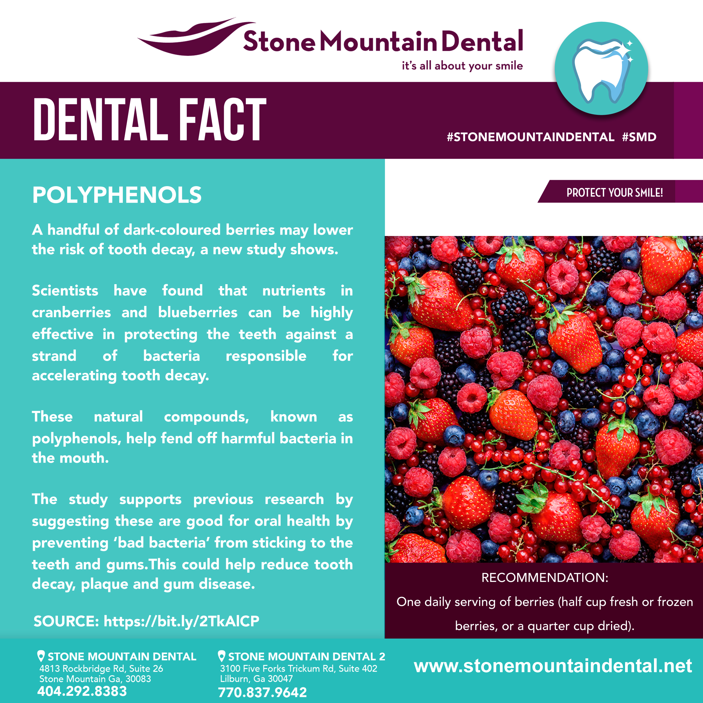
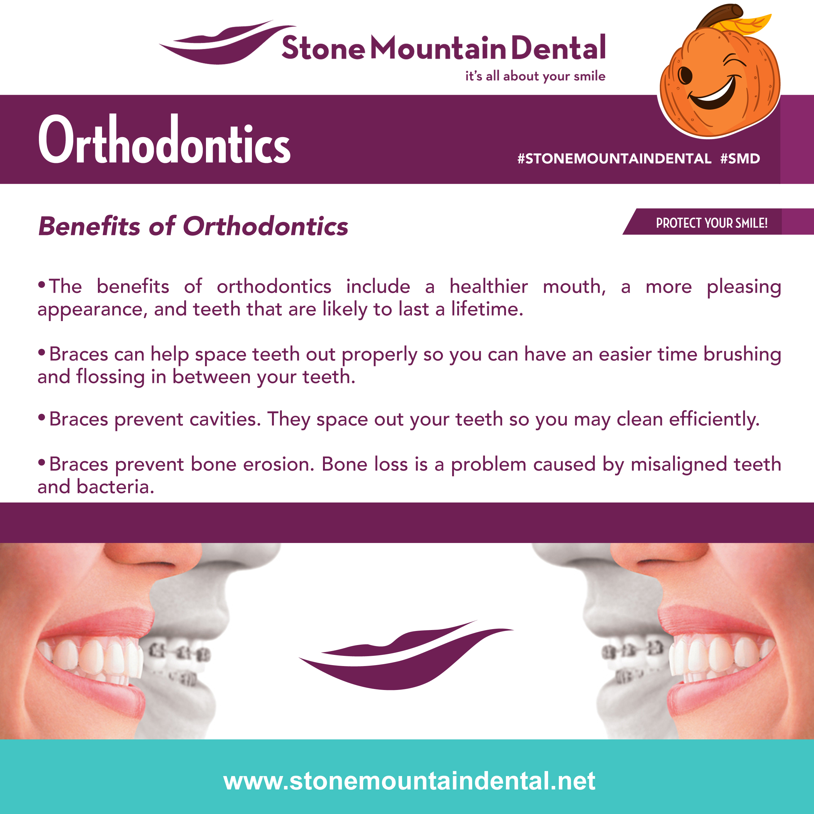
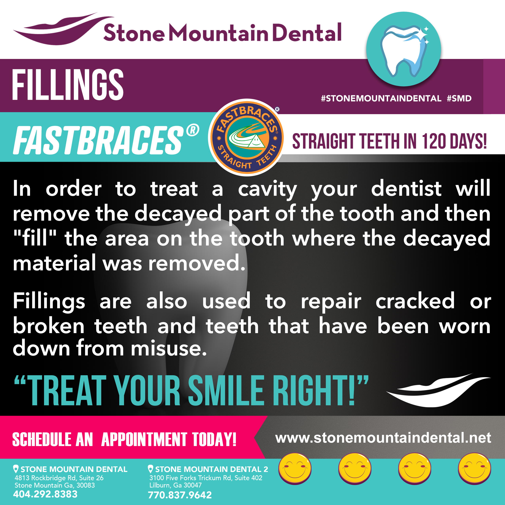
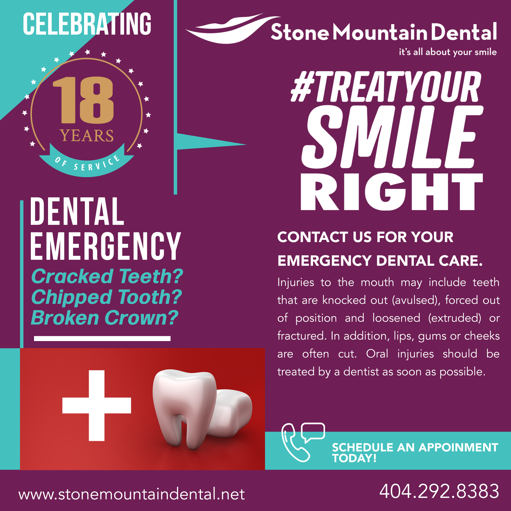

Educational Content
Dental Tips, Did You Know and fact-based posts designed to make useful information easy to consume.

Client Case Study
An extended body of creative work spanning social media, promotional graphics, educational content, video, print and ongoing brand support. Rather than treating each post as an isolated design, ARTIST53 developed recurring visual content that gave the practice multiple ways to communicate while maintaining a recognizable brand presence.
The Content System
The social media work was developed as a repeatable content system. Educational posts, dental facts, service promotions, staff content and advertising could each serve a different communication goal while still feeling connected to the same practice.
Dental Tips, Did You Know and fact-based posts designed to make useful information easy to consume.
Branded creative highlighting dental services, treatments and reasons to schedule an appointment.
People-focused content supporting the personality, team and day-to-day identity of the practice.
Promotional concepts and coordinated graphics developed around specific messages, offers and initiatives.
Educational Social Content
Recurring educational series gave Stone Mountain Dental useful branded content beyond direct advertising. The visual system could accommodate tips, facts and informational messaging while keeping the practice visible between promotions.

Service Promotion
Service-focused graphics translate what the practice offers into visual promotional material that can work across social channels and larger campaigns.

Service Campaign
Branded service promotion developed to give the practice a clear visual way to feature treatment options while staying within the broader Stone Mountain Dental identity.

Practice + Staff
Not every post needs to sell a service. Staff and practice content adds personality to the feed and gives the audience a more human connection to the business.

Beyond Social
The relationship extended beyond individual social posts into video, flyers, brochures, newsletters, presentations, signage and other branded materials. The result was a broader creative-support system that could carry the practice across digital and physical touchpoints.
Promotional and informational video content supporting campaigns and social communication.
Flyers, brochures, newsletters and supporting marketing materials.
Branded presentation materials for information, communication and training.
Signage and additional brand applications extending the visual identity beyond the screen.
ARTIST53 can build the visual system behind your social content, campaigns and supporting brand materials instead of treating every deliverable like a disconnected project.
View Services + Starting Rates